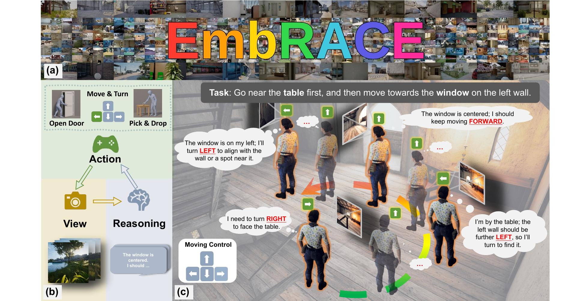
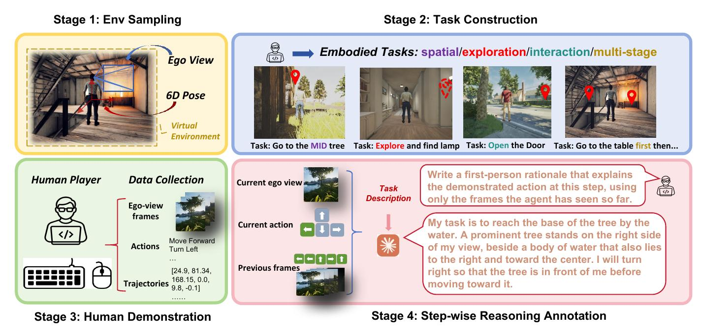
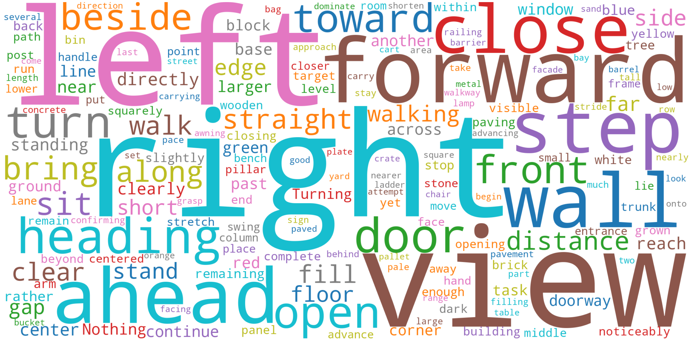
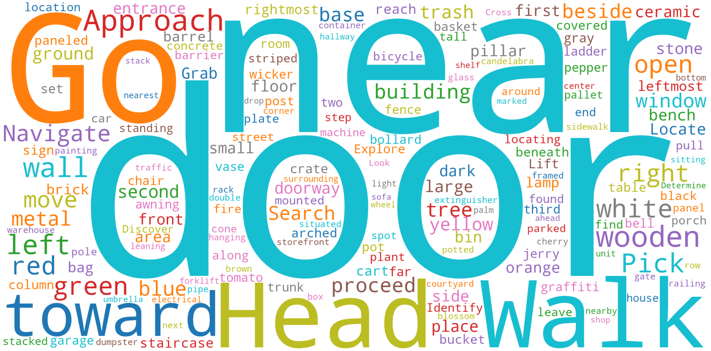
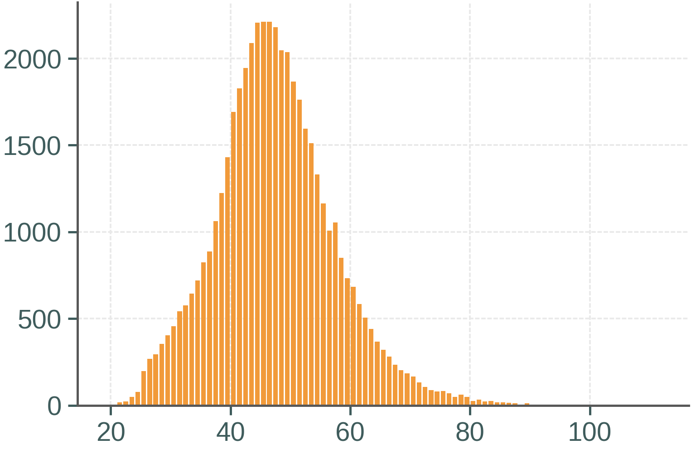
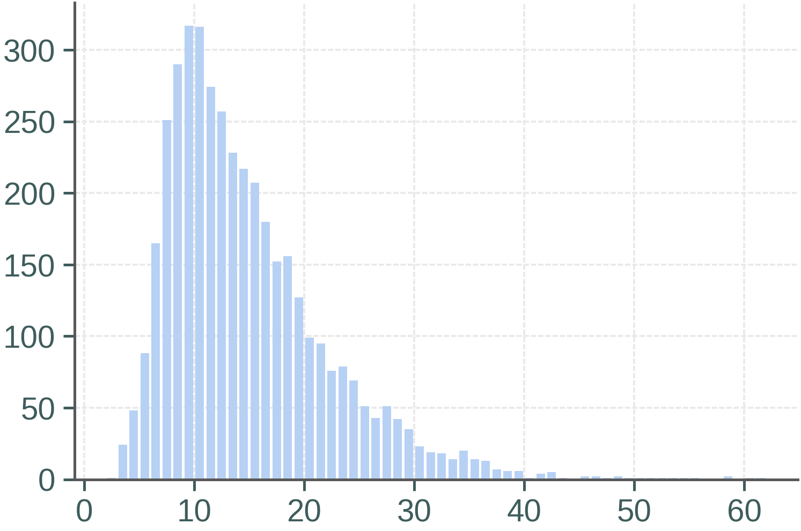
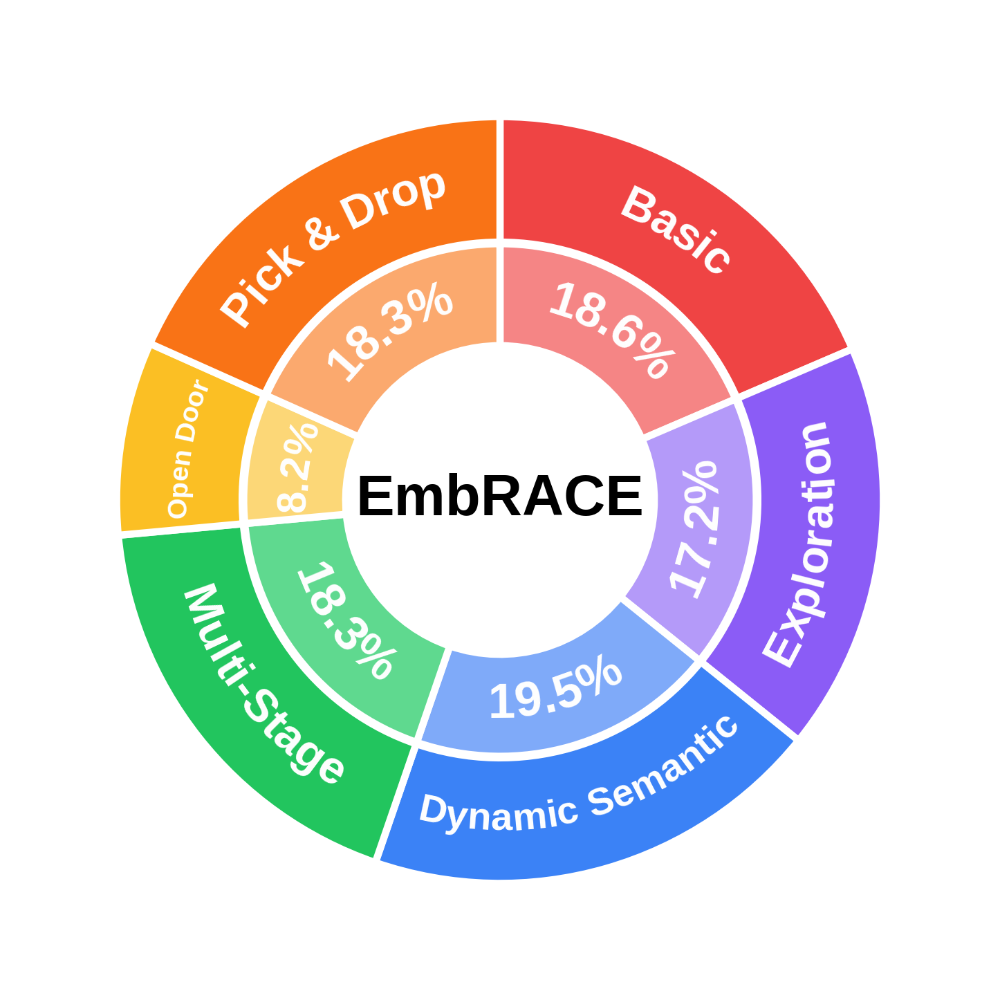

EmbRACE at a glance. (a) Photorealistic Unreal Engine environments, indoor and outdoor. (b) The closed loop. At each step the agent receives an egocentric view, produces a rationale, and issues one action, which changes the next view. (c) A human demonstration of the instruction shown, with the path taken and, at each step along it, the egocentric view, the rationale, and the action.

Vision-language models are increasingly run as embodied agents in a closed loop in which some decisions depend on what the agent saw earlier. Placed in this loop, current models act on the view in front of them, revisit views already searched, lose a target that has left the frame, and switch referents as the viewpoint changes. The demonstrations that embodied models learn from record the view and the action at each step, not the observations the action was based on. We present EmbRACE, a dataset of 3,421 human demonstrations recorded from the egocentric view in photorealistic Unreal Engine environments, indoor and outdoor, on tasks with targets to search for, relational and ordered targets, and door and object interactions. Each of its 48,264 steps carries a rationale that states what the action was based on and is verified against the frames. A benchmark of 686 tasks in 7 held-out environments runs models in the closed loop and scores them on the final position and on the door and object states. Frontier models score highest when the target is in view from the start, lower on all three task types that depend on an earlier observation, and below half when the target has to be searched for or returned to. Fine-tuning on EmbRACE takes four open models of 2B to 9B parameters from 3% to 8% overall to 57% to 68%. Relative to training on the same trajectories without them, the rationales raise success by 7% to 18% across task types and halve the fraction of episodes that return to views already seen. The dataset, the benchmark, and the code will be made publicly available.
EmbRACE is collected in four stages, each of which ends with a check that its artifact has to pass before the next stage builds on it, and the annotator who checks an artifact is never the one who produced it. (1) Annotators sample 6-DoF first-person start poses across the environments. (2) Annotators write the task instruction from the start pose, and a second annotator checks that the named target exists and matches the task type, that it can be reached, and that no other object of the same class fits the description. (3) Annotators record the demonstration by controlling the character from the egocentric view, and each recording is re-executed on a freshly loaded map and has to reproduce every pose exactly before a second annotator confirms that the task was accomplished. (4) Claude Opus 4.8 writes a rationale for every recorded step from the frames that precede it, and annotators verify every trajectory frame by frame on three criteria, that the objects and sides it mentions are visible where it says they are, that it asserts nothing unobservable at that step, and that the stated intent matches the executed action. Overall, the dataset has 3,421 demonstrations in 55 environments, 48,264 steps in all, each with a rationale verified by annotators. The benchmark has 686 tasks in 7 further environments, held out from training.






EmbRACE covers six types of embodied task, each recorded as a trajectory of single steps taken by a human demonstrator. The setting is closed-loop, so an action changes what the agent sees next and every decision rests on what has been seen up to that point. Each step carries the instruction, the egocentric view the demonstrator had before acting, the action taken, and a rationale written from that view and verified against it. Three examples of each type are shown below, from different environments.
Five models run the same task in the same environment, side by side. The three closed-source models are run zero-shot, and Qwen3.5-9B is shown before and after supervised fine-tuning on EmbRACE. Pick a task type to compare their behaviour. The clips run at the speed the character moved.
Closed-source models, zero-shot
Qwen3.5-9B, before and after fine-tuning on EmbRACE
We run real-world experiments on a wheeled mobile robot controlled by a Raspberry Pi 5 to examine how different vision-language models (VLMs) behave outside simulation. We provide demonstrations for both Navigation (Exploration) and Interaction (Pick & Drop), showing how each model performs when executing embodied tasks in a physical environment. The small inset image shown in each video represents the discrete egocentric frames received by the robot, which correspond to the exact visual observations available to the VLM during decision making. All clips are played back at 4× speed.
Closed-source models, zero-shot
Qwen3.5-9B, before and after fine-tuning on EmbRACE
@article{lin2025embrace,
title={EmbRACE: Embodied Reasoning and Action in Complex Environments},
author={Lin, Mingxian and Huang, Wei and Li, Yitang and Jiang, Chengjie and Wu, Kui and Zhong, Fangwei and Chen, Weikai and Qian, Shengju and Wang, Xin and Qi, Xiaojuan},
journal={arXiv preprint arXiv:2507.10548},
year={2025}
}